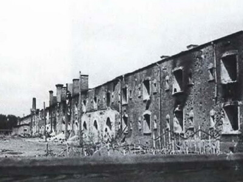

История героизма
История – это самый лучший учитель.
Брестская крепость
В начале 19 –го века по приказу русского царя Николая I город вместе с жителями был перенесен на новое место, а на месте города начато строительство защитной оборонительной крепости. Крепость строилась почти 10 лет и впоследствии постоянно расширялась, укреплялась и приспосабливалась к появляющимся новым видам вооружения. В те годы крепость была очень мощным оборонительным сооружением. Неоднократно на крепость совершались нападения, она переходила из одних рук в другие. Но, конечно самые героические страницы в историю крепости вписали советские воины, первыми вступившие в неравную схватку с врагом в июне 1941 года. Несмотря на то, что в Советском союзе и, особенно в приграничных районах, усиленно ходили слухи о возможности войны с немцами, для всего народа она началась внезапно. В Брестской крепости тоже готовились к войне, но все равно она застала пограничников и мирных жителей города врасплох. 21 июня 1941 года в крепости шла обычная военная жизнь.
Когда в 4 часа утра 22 июня началась массированная бомбежка, многие командиры растерялись, считая это провокацией с немецкой стороны. Телефонная связь между частями и с высшим командованием была прервана. Аэродромы и военная техника были уничтожены в первые часы войны. На Брестскую крепость были брошены лучшие немецкие дивизии, которые должны были захватить крепость в первые же часы войны. Но Брестская крепость не сдалась. Военные части армии генерал-майора Коробкова вступили в неравную схватку с врагом. Защитники Брестской крепости, которых осталось в крепости 3,5- 4 тысячи бойцов и командиров, оказали врагу сильнейшее сопротивление. Бои шли на всей территории крепости буквально за каждый клочок земли. Бойцам приходилось отбивать по 7-8 атак в день. Кроме солдат в крепости остались их жены и дети, которые помогали бойцам, подносили боеприпасы, оказывали помощь раненым. Против защитников крепости враг применял авиацию, усиленные обстрелы из орудий, газы и огнеметы. Но защитники крепости не сдавались. В крепости заканчивались продукты питания, не было воды. Когда стало ясно, что в ближайшее время помощи ждать неоткуда, было принято решение вывести из крепости женщин и детей. Они ушли из крепости 28 июня 1941 года. Оборона крепости продолжалась еще больше месяца. Многие бойцы погибли, некоторые раненными оказались в плену. Последние защитники крепости проявили удивительные чудеса героизма. Это они сделали свои последние надписи на стенах: «Умрем, но из крепости не уйдем», «Я умираю, но не сдаюсь. Прощай Родина. 20.VII.41 г.». Ни одно из знамен воинских частей, сражавшихся за крепость, не досталось врагу. По примерным подсчетам, в крепости погибли около трех тысяч командиров и бойцов Красной Армии. Большинство участников обороны погибли в бою или в немецком плену. Лишь немногим из них удалось вырваться из окружения и продолжить борьбу на фронтах и в партизанских отрядах. До Великой победы дожили около 400 человек. 8 мая 1965 г. Брестской крепости было присвоено почетное звание «Крепость-герой», вручены орден Ленина и медаль «Золотая Звезда», которые находятся на вечном хранении в Музее обороны.

Мемориальный комплекс «Брестская крепость» был открыт в 1971 году. На открытии присутствовали почетные гости: участники обороны, делегации городов-героев, бывшие командиры воинских частей, освобождавших город, ветераны войны. И сегодня мемориал является центром паломничества для туристов из Беларуси, России, стран СНГ и всего мира, а на Церемониальной площади проходят торжества, встречи ветеранов, молодежные фестивали. Ежегодно в конце июня из Москвы отправляется в Брест «поезд памяти» с ветеранами, родными и близкими защитников крепости, студентами и школьниками. А в 4 часа утра в Брестской крепости проходит реквием памяти борцам за свободу своей Родины.